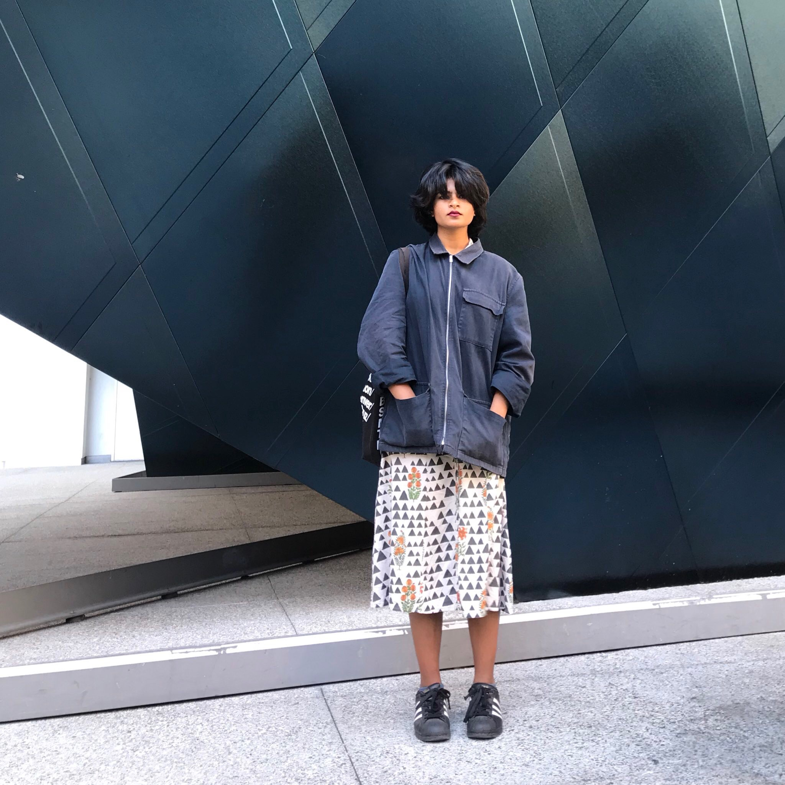

Sannidhi Shukla
About
I study Environmental Economics and Policy at UC Berkeley. I'm interested in
environmental equity, and urban sustainability.
I am a journalist and writer who writes about music, South Asian American identity, and arts in the Bay Area. I'm also interested in the opportunity to work in technical writing or copywriting.
I'm a huge nerd about literature and about data science. This all comes together in my work as an undergrad library fellow in digital humanities. There, I work with computational text analysis.
In my free time, I love to read, eat cute pastries and listen to music.
If you'd like to get in touch, you can also use the links to the left. You can also look around to see my writing, code, and learn more about me!
I am a journalist and writer who writes about music, South Asian American identity, and arts in the Bay Area. I'm also interested in the opportunity to work in technical writing or copywriting.
I'm a huge nerd about literature and about data science. This all comes together in my work as an undergrad library fellow in digital humanities. There, I work with computational text analysis.
In my free time, I love to read, eat cute pastries and listen to music.
If you'd like to get in touch, you can also use the links to the left. You can also look around to see my writing, code, and learn more about me!